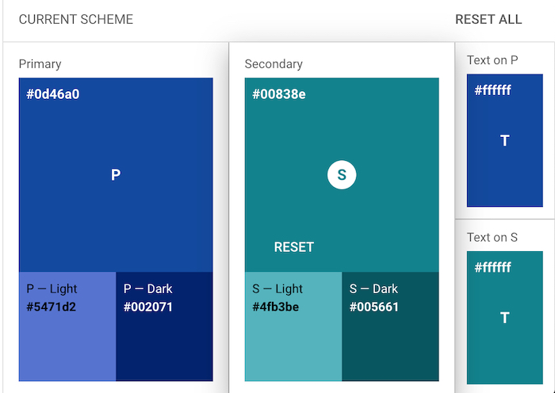
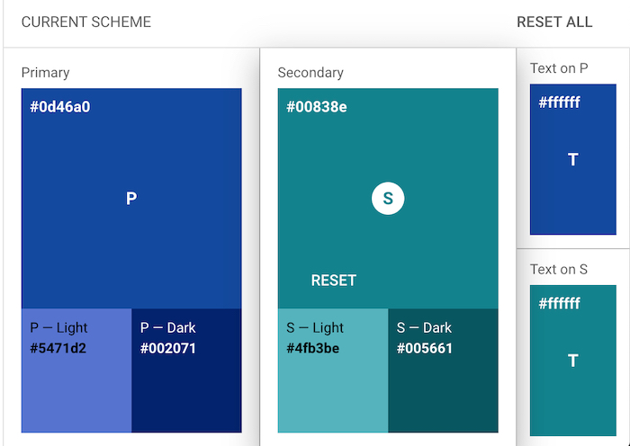

Rexburg Chamber of Commerce Planning Document
Color Scheme
Primary and Secondary
"This color scheme was generated with the help of the Material Design Color Tool
"This color scheme was generated with the help of the Material Design Color Tool
